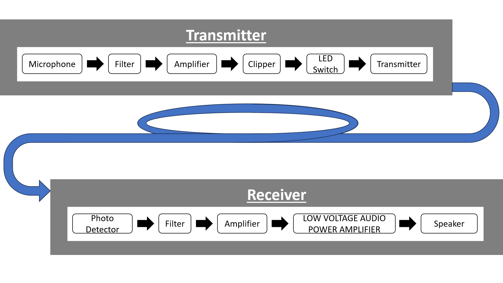

Aim
To transmit an audio signal through an optical fiber and reproduce the audio signal using a speaker.
Apparatus
The equipment and materials required for the experiment are:
- LED Fiber Coupler
- Detector Fiber Coupler
- Optical Fiber
- Microphone
- Speaker
- Communication Box
- Photo Transistor
Theory
Optical fibers are used in communication systems to transmit data, including audio signals, over long distances with minimal loss. An audio signal is converted into an optical signal using an LED. This optical signal travels through the fiber and is then converted back into an electrical signal at the receiver using a detector. The electrical signal is amplified and played back through a speaker to reproduce the audio.
Procedure
Follow these steps to perform the experiment:
- Connect the microphone to the communication box to capture the audio signal.
- Transmit the audio signal to the LED fiber coupler, which converts the electrical signal into an optical signal.
- Pass the optical signal through the optical fiber to the detector fiber coupler.
- The detector converts the optical signal back into an electrical signal.
- Amplify the electrical signal using the communication box and connect it to a speaker.
- Observe the reproduced audio signal from the speaker and compare it with the original audio signal.
Observations
| S.no | Frequency Provided | Frequency detected from Input | Frequency Detected From Speaker | Presence of Noise |
|---|---|---|---|---|
| 1 | 310 | 311 | 311 | |
| 2 | 350 | 349 | 349 | |
| 3 | 400 | 398 | 398 | |
| 4 | 450 | 451 | 451 | |
| 5 | 500 | 498 | 498 | |
| 6 | 550 | 551 | 551 | |
| 7 | 600 | 598 | 598 | |
| 8 | 700 | 697 | 697 | |
| 9 | 800 | 797 | 797 | |
| 10 | 900 | 902 | 902 | |
| 11 | 1000 | 996 | 996 | |
| 12 | 2000 | 1992 | 1992 | |
| 13 | 3000 | 3000 | 3000 | |
| 14 | 4000 | 3984 | 3984 | |
| 15 | 5000 | 5016 | 5016 | |
| 16 | 6000 | 6000 | 6000 | |
| 17 | 7000 | 7031 | 7031 | |
| 18 | 8000 | 7969 | 7969 | |
| 19 | 9000 | 9000 | 9000 | |
| 20 | 10000 | 10031 | 10031 | |
| 21 | 11000 | 10969 | 10969 | |
| 22 | 12000 | 12000 | 12000 | |
| 23 | 13000 | 13031 | 13031 | |
| 24 | 14000 | 13969 | 13969 | with noise |
| 25 | 13500 | 13500 | 13500 | |
| 26 | 13750 | 13781 | 13781 | |
| 27 | 13875 | 13875 | 13875 | with noise |
| 28 | 300 | 299 | 299 | |
| 29 | 250 | 249 | 498 | with noise |
| 30 | 275 | 275 | 551 | with noise |
| 31 | 288 | 287 | 287 | |
| 32 | 282 | 281 | 281 | |
| 33 | 278 | 278 | 278 | |
| 34 | 277 | 278 | 278 | |
| 35 | 276 | 275 | 275 |
Conclusion/Results
The experiment demonstrated successful transmission of an audio signal through an optical fiber and its reproduction using a speaker. The quality of the reproduced signal depends on the efficiency of the LED, detector, and optical fiber used in the setup.